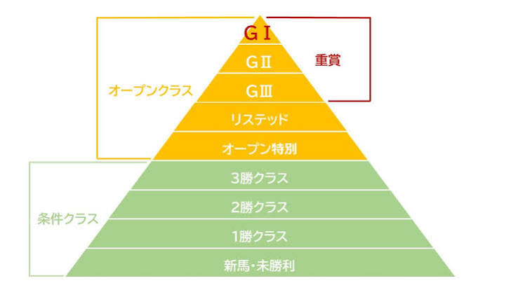
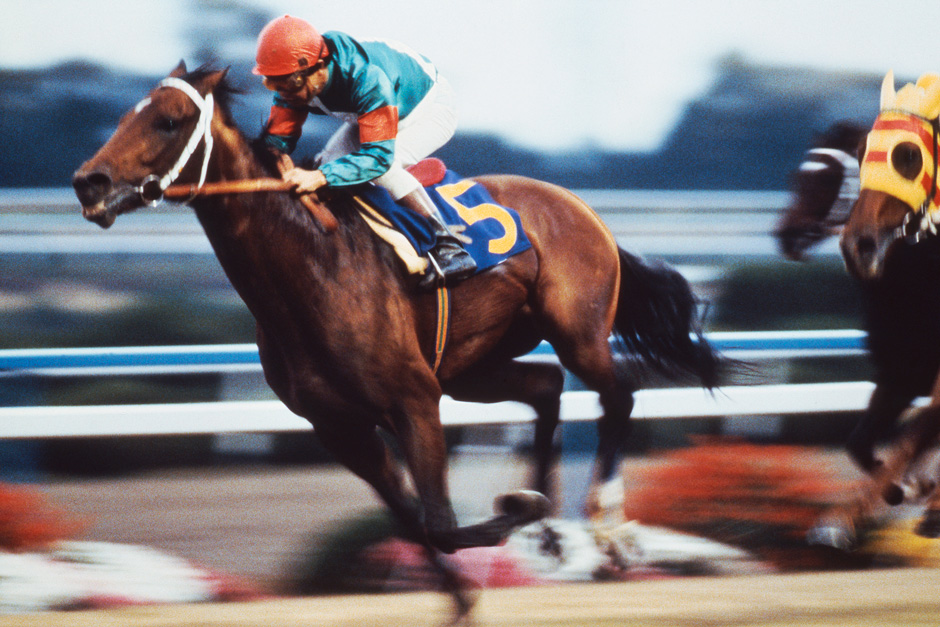
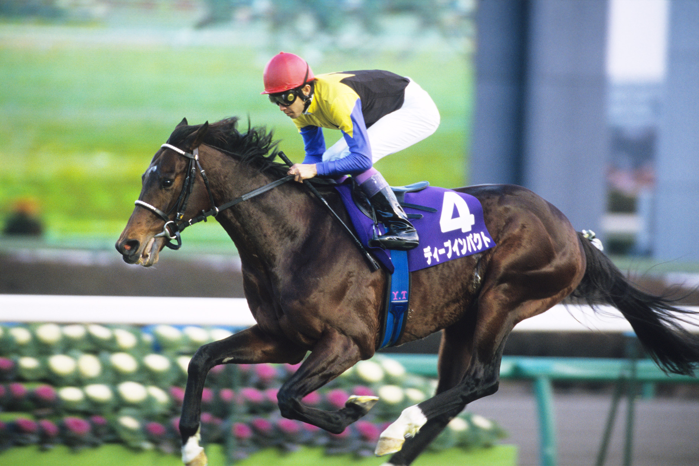
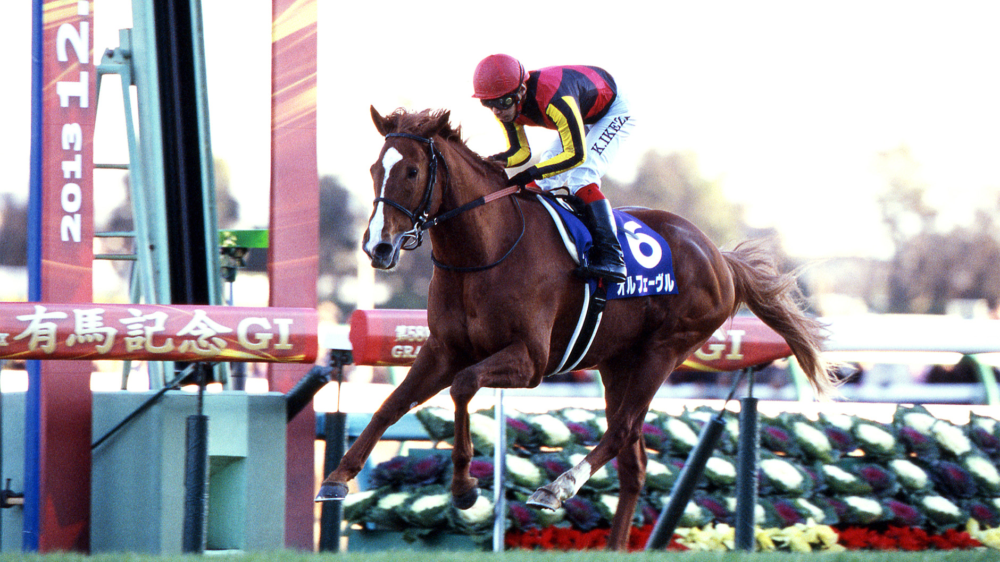
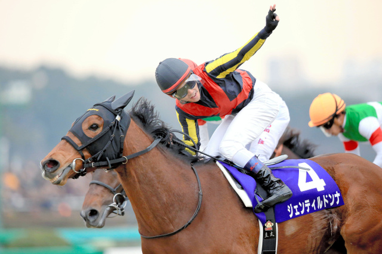
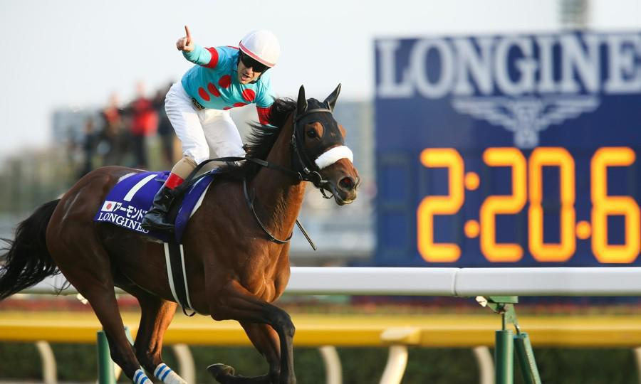

GⅠレースとは？
GⅠとは日本中央競馬（JRA）が定める最も格式の高い重賞競走です。国内外のトップホースが集まり、 競馬界最高峰のレースとして位置付けられています。日本では毎年26レースが開催されています。

💡 競馬の基礎知識：レースによる違い
GⅠレースは、馬の適性（得意分野）に合わせて様々な舞台が用意されています。
🌱 芝（ターフ）と ⏳ ダート（砂）
日本の競馬場には、大きく分けて2種類の「地面（馬場状態）」があります。
| 特徴 | 芝（グリーン） | ダート（砂） |
|---|---|---|
| 求められる能力 | 最高速度（スピード）、瞬発力 | パワー、スタミナ、粘り強さ |
| 主なレース | 皐月賞、日本ダービー、有馬記念 など | フェブラリーS、チャンピオンズC など |
芝レースは華やかでスピード決着が多く、日本の主流です。一方、ダートは砂埃を 巻き上げて走るパワフルなレース展開が魅力で、天候による影響を受けにくいタフさが求められます。
🌧 馬場状態による変化
雨の影響で水分を含むと「良 → 稍重（ややおも） → 重 → 不良」と変化します。
- 芝：水分を含むと滑りやすくなり、パワーやスタミナ（タフさ）が求められます。
- ダート：水分を含むと砂が固まって走りやすくなり、逆にスピードが出やすくなります。
📏 距離による5つのカテゴリー
走る長さによって、出場する馬のタイプやレース展開がガラリと変わります。
- 🏃 スプリント（1000m～1400m未満） 一瞬の油断も許されない超高速バトルで、スタートダッシュと純粋なスピードが命です。
- 🔥 マイル（1400m～1800m未満） スピードと持久力の完璧なバランスが必要で、「近代競馬の根幹」と呼ばれる激戦区です。
- 👑 中距離（1800m〜2200m未満） スタミナと瞬発力の両立が求められ、世界的に最もスタンダードな距離です。
- 🏇 中長距離（2200m～2800m未満） スピード、スタミナ、瞬発力などの総合力が求められ、競走馬としての真価が最も問われる距離です。
- 💪 長距離（2800m以上） 長距離になったことで、騎手の駆け引きや、馬のスタミナ・忍耐力が試されるスタミナ勝負です。
クラシック三冠
クラシック三冠とは、3歳馬限定で行われる 皐月賞、日本ダービー、菊花賞の3つのGⅠ競走を すべて制覇することを指します。 3つのレースをすべて勝つことは非常に難しく、 達成した馬は日本競馬を代表する名馬として知られています。
🏇 クラシック三冠馬
これまでにクラシック三冠を達成した8頭の中から、 ここでは3頭を紹介します。

シンボリルドルフ
1984年史上初の無敗クラシック三冠やGⅠ競走7勝を達成した名馬です。 その競走成績・馬名から「皇帝」と称され、 引退後は種牡馬としてトウカイテイオーなどを輩出しました。

ディープインパクト
2005年日本競馬史上2頭目となる、無敗クラシック三冠を達成しました。 現役時代は圧巻のパフォーマンスでファンを魅了し、 引退後も種牡馬として日本競馬史に様々な記録を残した世界的名馬です。

オルフェーヴル
2011年史上7頭目のクラシック三冠を達成しました。 凱旋門賞では2年連続2着に終わり悲願達成はならなかったものの、 ラストランの有馬記念を8馬身差で圧勝し、 ファンに強烈な印象を残しました。
🏆 クラシック三冠レース紹介
クラシック三冠を構成する3つのGⅠ競走を紹介します。 それぞれ異なる距離と特徴を持ち、3歳馬の頂点を決める 重要なレースとして位置付けられています。
牝馬三冠
牝馬三冠とは、3歳牝馬限定で行われる 桜花賞、優駿牝馬（オークス）、秋華賞の3つのGⅠ競走を すべて制覇することを指します。 牝馬三冠を達成した馬は、日本競馬を代表する名牝として 長く語り継がれています。
※牝馬はメスの馬のことを指します。 オスの馬は牡馬と呼びます。
🏇 三冠牝馬
これまでに牝馬三冠を達成した7頭の中から、 ここでは3頭を紹介します。

ジェンティルドンナ
2012年桜花賞、優駿牝馬、秋華賞を制覇し、 史上4頭目の牝馬三冠を達成した名牝です。 その後もジャパンカップを連覇するなど、 古馬になってからも国内外で大きな活躍をしました。

アーモンドアイ
2018年史上5頭目の牝馬三冠で、天皇賞秋連覇、ジャパンカップ2勝を達成しました。 芝GⅠ勝利数はJRA史上最多の9勝を挙げ、この輝いた名牝の軌跡は 末永く讃えられています。

デアリングタクト
2020年史上初となる無敗での牝馬三冠を達成しました。 その後はけがの影響もあり白星に恵まれないまま引退したものの、 現在は繁殖牝馬として期待されています。
🏆 牝馬三冠レース紹介
牝馬三冠を構成する3つのGⅠ競走を紹介します。 春の桜花賞と優駿牝馬、そして秋の秋華賞を制することで、 牝馬三冠達成となります。
天皇賞
天皇賞は、日本競馬を代表する伝統あるGⅠ競走です。 春と秋の年2回開催され、それぞれ異なる距離で 競走馬の能力が競われます。 長い歴史と格式を持ち、多くの名馬が 天皇賞の舞台で熱戦を繰り広げてきました。
グランプリレース
グランプリレースとは、ファン投票で出走馬が選ばれる 最高峰のレースで、6月の「宝塚記念」と12月の「有馬記念」の総称です。 競馬ファンが「今一番見たいスター馬」を直接選ぶため、 実力と人気を兼ね備えた一流馬たちが一堂に会し、熱い火花を散らします。
🗓 年間GⅠレースのロードマップ
季節とカテゴリーごとに繰り広げられる、最高峰GⅠの年間ストーリー
開幕 ＆ スピード王決定戦
ダート最高峰「フェブラリーS」で開幕。春の電撃スプリント「高松宮記念」へ繋がります。
3歳クラシック ＆ 牝馬の頂点
一生に一度の「皐月賞」「桜花賞」が開幕。長距離最強を決める天皇賞（春）から牝馬の頂点を決める「ヴィクトリアマイル」「オークス」へ。
ホースマン最高の栄誉 ＆ 宝塚記念
日本競馬の頂点「日本ダービー」が開催。上半期の総決算ファン投票「宝塚記念」で春の陣が完結します。
秋の陣始動 ＆ 三冠完結
「スプリンターズS」で秋が開幕。3歳馬たちのラストチャンス「秋華賞」「菊花賞」で三冠馬の栄誉を掴みます。
古馬最高峰 ＆ 世界との激闘
中距離最速を決める「天皇賞（秋）」、マイル王決定戦を経て、世界の強豪が集う「ジャパンカップ」へ。
総決算 ＆ 有馬記念
2歳王者戦やダート頂上決戦を経て、日本中が熱狂する夢のオールスター戦「有馬記念」で締めくくられます。